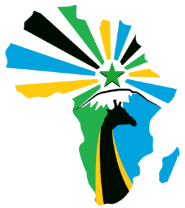
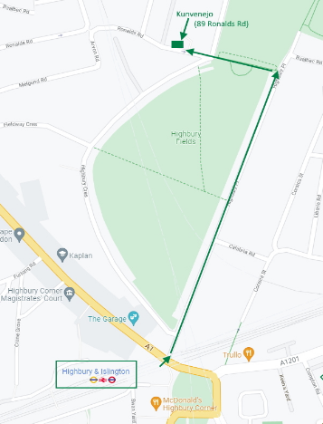

Unua Universala Kongreso en Afriko
La 109-a Universala Kongreso de Esperanto en 2024 okazos unuafoje en Afriko, en la urbo Aruŝo en Tanzanio. La datoj de la kongreso estos: 3 — 10 de aŭgusto 2024.
Je la dato de la 23-a de aprilo, pli ol 441 homoj el 55 landoj jam aliĝis. Ankaǔ vi povas partopreni, viziti belan urbon kaj landon, denove ĝui la etoson de Esperantujo kaj la gastigemon de la lokanoj. La duan bultenon, kun multe da informoj pri la kongreso, ekskursoj kaj praktikaĵoj, UEA jam publikigis.
Vidu uk.esperanto.net/2024/duabulteno.
Por aliĝi al la kongreso, bonvolu viziti la retejon de Universal Esperanto-asocio, ĉe uk.esperanto.net/2024
Ĉeestaj renkontiĝoj
Jen pli da detaloj pri la venontaj ĉeestaj renkontiĝoj.
La 10-an de majo Matt Pepperell prezentos ‘Malferma Registaro”. En 2011 novan politikon enkondukis la brita registaro kun tiu nomo. Ĝi signifas ke procezoj, sukcesoj (kaj malsukcesoj), decidoj, kontraktitaj kompanioj ktp estu videblaj al la publiko. Matt laboris en diversaj ministerioj dum pli ol 7 jaroj kaj montros siajn impreson kaj spertojn gajnitajn dum tiu tempo.
La 1-an de junio okazos komuna kafumado kunlabore kun la Esperanto-grupo de Reading kaj Oksfordo. Ĉi-monate ĝi okazos en ĉarma kafejo apud Paddington, kun komenc-horo je la deka matene. Por pli da informoj, vizitu eventaservo.org/e/8893a0 aŭ sendu mesaĝon al Rico (rico@esperanto.org).
Jen ankaŭ atentigo, ke la junia ĉeesta kunveno en Highbury okazos la 14-an de junio.
LEK en la interreto
Retejo: londonaesperantoklubo.com/
Estontaj eventoj (reteje): londonaesperantoklubo.com/eventoj.html
Eventa Servo: eventaservo.org/o/LEK
Fejsbuko: www.facebook.com/groups/londonaesperantoklubo
Telegramo: t.me/+jgGKYWSkGOhlODE0

Nia renkontiĝejo
La surlokaj kunvenoj de LEK okazas unu fojon monate, kutime la 2-an vendredon de ĉiu monato. La venonta kunveno okazos la 10-an de majo. La kunvenejo troviĝas ĉe:
Highbury View
89 Ronalds Road
London
N5 1XQ
Mapo: goo.gl/maps/jNtGf5AcG68ogPrq6
Por ĝisdatigitaj informoj pri kiel atingi Highbury View, oni povas ankaŭ konsulti la retejon de TFL ĉe tfl.gov.uk/plan-a-journey
La ejo estas facile atingebla de la metrostacio Highbury & Islington. Temas pri pli-malpli 10minuta piedirado.
Atentu, ke por eniri la ejon, oni bezonas enirkodon. Se vi ne konas ĝin kaj intencas ĉeesti, bv. kontakti la sekretarion per retmesaĝo al renato.corsetti@gmx.com por havi la kodon.

Londona Esperanto-klubo
Funkciuloj
Honora Prezidanto: Prof. John Wells; Honoraj Vicprezidantoj: Heleno Fantom, Joyce Bunting.
Matt Peperell (prezidanto); Gabriel Beecham (vicprezidanto); Arturo Prent (kasisto); Renato Corsetti (sekretario), Anthony Bodineau (komitatano kaj registristo); Phil Housley, Alexander Hu, Julian Nagele, Maria Schett, Marijus Banaitis (komitatanoj).
Maurizio Giacometto (kompilisto de la Bulteno).